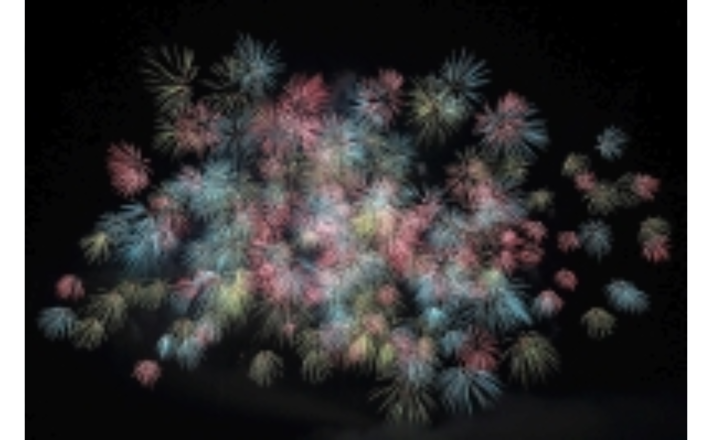

img_typicality returns the visual typicality of a list of images
relative to each other. Higher values indicate larger typicality.
Arguments
- imglist
A list of arrays or matrices with numeric values. Use e.g.
img_read()to read image files intoR(see example).- rescale
numeric. Rescales the images prior to computing the typicality scores (per default no rescaling is performed). Rescaling is performed by
OpenImageR'sresizeImagefunction (bilinear rescaling)
Details
The function returns the visual typicality of a list of image
arrays or matrices imglist relative to each other. Values can range
between -1 (inversely typical) over 0 (not typical) to 1 (perfectly typical).
That is, higher absolute values indicate a larger typicality.
The typicality score is computed as the correlation of a particular image with the average representation of all images, i.e. the mean of all images. For color images, the weighted average between each color channel's values is computed. If the images have different dimensions they are automatically resized to the smallest height and width.
Rescaling of the images prior to computing the typicality scores can be
specified with the optional rescaling parameter (must be a numeric value).
Most users won't need any rescaling and can use the default (rescale
= NULL). See Mayer & Landwehr (2018) for more details.
References
Mayer, S. & Landwehr, J. R. (2018). Objective measures of design typicality. Design Studies, 54, 146–161. doi:10.1016/j.destud.2017.09.004
Examples
# Example images depicting valleys: valley_green, valley_white
# Example image depicting fireworks: fireworks
valley_green <- img_read(
system.file("example_images", "valley_green.jpg", package = "imagefluency")
)
valley_white <- img_read(
system.file("example_images", "valley_white.jpg", package = "imagefluency")
)
fireworks <- img_read(
system.file("example_images", "fireworks.jpg", package = "imagefluency")
)
#
# display images
grid::grid.raster(valley_green)
grid::grid.raster(valley_white)
grid::grid.raster(fireworks)

# create image set as list
imglist <- list(fireworks, valley_green, valley_white)
# get typicality
img_typicality(imglist)
#> [,1]
#> img1 .40
#> img2 .72
#> img3 .75